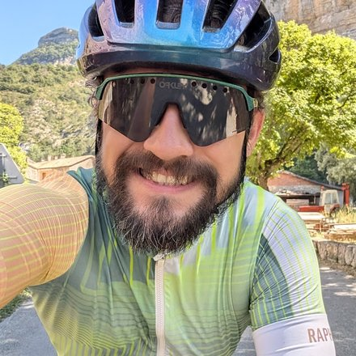

Andrzej Bedychaj
I build and ship multimodal retrieval and computer vision systems, and take ML from research to production in the cloud. MSc in Applied Mathematics, with research papers at NeurIPS, ECML PKDD and PAKDD.
Experience
Senior AI Engineer / AI Researcher — Raw Power Labs
Shipped a multimodal retrieval and semantic-caching platform on AWS. Replaced a hand-set similarity cutoff with a learned per-query confidence scorer under conformal calibration, driving hit/seed/miss routing in the live ranking path.
Senior Data Scientist, CV Researcher / Tech Lead — N-iX
Visual similarity engine that beat Fashion CLIP and in-house baselines; Azure video classification for a global ad-rating agency; OCR + IoT for medication capture; object detection for laptop motherboard repair.
Senior Machine Learning Engineer — Picnic
Group recommendation engine, generative image/text tools, and a Go content-moderation service on GCP.
Data Scientist — Karhoo
Production models for automatic trip-failure justification and supplier quote/availability prediction.
Earlier: QA / Test Automation
Test automation, performance environments for IoT, and data-warehouse/Big Data testing.
Member of the research groups GMUM and SMILE.
Selected publications
- StyleAutoEncoder for manipulating image attributes using pre-trained StyleGAN — PAKDD 2024
- Non-Gaussian Gaussian Processes for Few-Shot Regression — NeurIPS 2021
- On the relationship between disentanglement and multi-task learning — ECML PKDD 2022
- WICA: nonlinear weighted ICA — IPMU 2022
- Independent Component Analysis based on multiple data-weighting — Schedae Informaticae
- ICA based on Split Generalized Gaussian — Schedae Informaticae 2019
Skills
Education & certifications
- MSc Applied Mathematics, Jagiellonian University (2015)
- BSc Computational Mathematics, Jagiellonian University (2013)
- NVIDIA-Certified Associate: Multimodal Generative AI
- AWS AI Practitioner